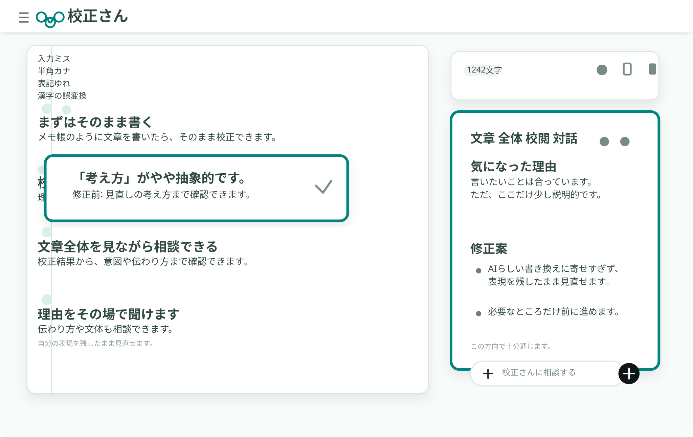

オフライン
書いた文章を外部に送らずにチェックできるので、安心して使えます。
メール、SNS、ブログ下書き、フォーム入力。スマホで書いた文章を、書き直しすぎずに整えます。
変換ミスや抜けがないか、送信前の数分で確認できます。
全部を書き換えるのではなく、気になる箇所だけ静かに見直せます。
書いた人が主役のまま、伝わりにくさだけを整えたいときに向いています。
PCだけでなくスマホでも使えるので、移動中に書いた文章もその場で見直せます。
何度でも校正できるので、送信前のセルフチェックや、書きながらの確認に向いています。
メモ帳のように文章を書いたら、いつもの流れのまま校正できます。
誤字脱字、表記ゆれ、言い回しなどを一覧で見ながら直せます。
修正候補を眺めるだけでなく、見直しの理由まで確認できます。
「校正さんに相談」は、校正結果をきっかけに文章の意図や伝わり方まで確認できる機能です。AIらしい書き換えに寄せすぎず、書いた人の表現を残したまま見直せます。

検索して見つけた人が、そのまま試せる軽さを大事にしています。スマホでもPCでも、同じ入口から使えます。
書いた文章を外部に送らずにチェックできるので、安心して使えます。
アカウント作成なしで開けるので、思いついたときにすぐ使えます。
落ち着いて見直したいときは、PCでも同じように使えます。
移動中に書いた文章も、その場で見直せます。
ブラウザでそのまま開けます。使い方やほかの文章校正ツールをまとめた記事も用意しています。